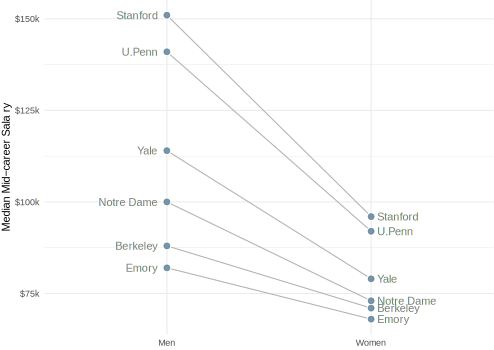

Visualizing Relationships and Change Over Time
Complete in Class and Submit
Baby Names
Instructions: Download the R Markdown file below, insert your code where indicated, and email me your knitted .html output. No need to send the .Rmd file!
To complete this assignment, you must install the babynames package:
install.packages("babynames")
- babynames.Rmd
- babynames-solutions.html (for reference—finished plots with no code!)
For Reference Only (nothing to turn in!)
Katrina
Instructions: Just look at it! And use it as a guide if you want to create maps.
To make the maps, you will need to install the packages rnaturalearth and rgeos.
install.packages("rnaturalearth")
install.packages("rgeos")
Pay Gaps
Instructions: Reminder of how we arrived at our dumbbell plot in class.
- school-earnings.csv (data file)
- pay-gaps.html
Between now and class on Feb. 28
- Work on Small Project 1!
Get caught up will any other assignments that you haven’t completed. This includes:
- 9 DataCamp chapters.
msleeppiesbaboon-activitiesbabynames
For the keeners (optional)
Using what you learned in the pay-gaps activity, try to visualize the earnings data as a slopegraph:

Notes:
- Only 6 schools are shown: Emory, U.Penn, Yale, Berkeley, Notre Dame, and Stanford.
- There are labels on both sides that do not obscure the points (hint: plot left and right labels separately, and use
glue()to pad the label with spaces on the appropriate side).